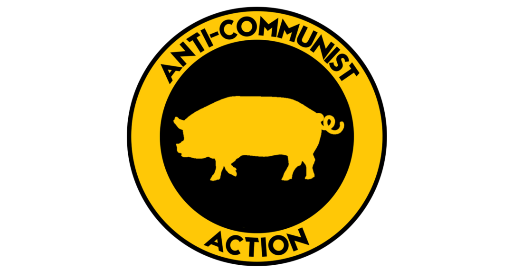

Anti-Communist Action (также известная как Anticom) — это ебучее сборище долбоёбов, конченых ультраправых уёбков и вырожденцев, базирующееся в США и Канаде [1][2][3]. Эта банда мудаков сама себя называет «правым ответом антифе» [4], но на самом деле это просто стадо ебаных неонацистских свиней, которые открыто проповедуют нацистскую идеологию и таскаются на неонацистские тусовки [5][4][6].
Эти дерьмовые выблядки также работают вышибалами на всяких альтрайтовых и белых супрематистских шабашах [6]. Но самый пиздец в том, что эта помойка напрямую связана с неонацистской террористической организацией Atomwaffen Division — они делятся друг с другом членами (и не только), а также обмениваются инструкциями по ведению боя и изготовлению бомб [6]. Короче, обычные конченые фашистские мудаки, от которых воняет за километр.
Anti-Communist Action

Основатель:
Сет Витко — сын шлюхи
Год основания: 2016 — год, когда этим уёбкам нехуй стало заняться.
Идеология:
• Антикоммунизм — потому что сами не способны ничего построить.
• Неофашизм — для тех, кому не хватило ума понять историю.
• Неонацизм — идеология для конченых дегенератов.
• Пиночетизм — обожают сбрасывать людей с вертолётов, ебланы.
• Белый национализм — оправдание для своих ничтожных комплексов.
Политическая позиция:
Правые — ультраправые — или просто мудаки, которым негде больше проявить свою «исключительность».
Жёлто-чёрная хуйня, где их ебанный вертолёт с ними рушится, а коммунист выживает падая на парашюте.
Примечания и источники
Примечания и источники
Эти конченые фашистские уёбки везде описаны как ультраправое отребье:
• Merelli, Annalisa в Quartz прямо называет этих мудаков белыми супрематистами с ебучей ксенофобией и антисемитизмом
• Axios подтверждает, что это просто шайка ультраправых дегенератов
• ProPublica раскрыла, как эти террористические выблядки делятся инструкциями по созданию бомб и открыто проповедуют фашистскую идеологию, ненавидя всех подряд
Даже когда их называют просто "правыми", сразу видно, что это продажные журналюги пытаются приукрасить этих нацистских психов:
• Washington Post и The Daily Beast признают, что эти ебанутые уёбки — откровенные расисты и антисемиты
• Charlotte Observer документирует, как эти трусливые свиньи пытаются устраивать свои фашистские шествия
Короче, вся их деятельность — это постоянные попытки сосать у антифа, хотя сами они просто недоделанные нацики, которым место в помойке..
Ебучие отсылки
Ебучие отсылки
Вот пиздатый список источников, которые подтверждают, что Anticom — это сборище ебаных дегенератов:
• Ebner, Julia в своем исследовании прямо называет этих уёбков «маргинальными повстанцами» — красивое слово для фашистского отребья
• Newsweek в своем гиде по белым националистам открыто пишет, что эти мудаки участвовали в Шарлоттсвильском пиздеце
• Quartz еще раз подчеркивает, что это расистские свиньи с ихним «White Lives Matter»
• The Daily Beast раскрывает, как армия США подхватила нарративы этих ультраправых уёбков
• NPR документирует, как антифа успешно опустили этих фашистских недоделов в Шарлотте
• ProPublica — again, блядь — снова показывает, как эти террористы делятся инструкциями по созданию бомб
• Huffington Post пишет, как ихний «White Lives Matter» был отменен из-за мощного сопротивления
• Даже Вашингтон Пост, эти продажные журналюги, признает, что от этих психов одни проблемы
Короче, все нормальные источники сходятся в одном: Anticom — это кучка ебаных нациков, которые только и могут, что сосать у антифа и строить из себя революционеров. На самом деле они просто недоделанные фашисты, которым место на свалке истории.